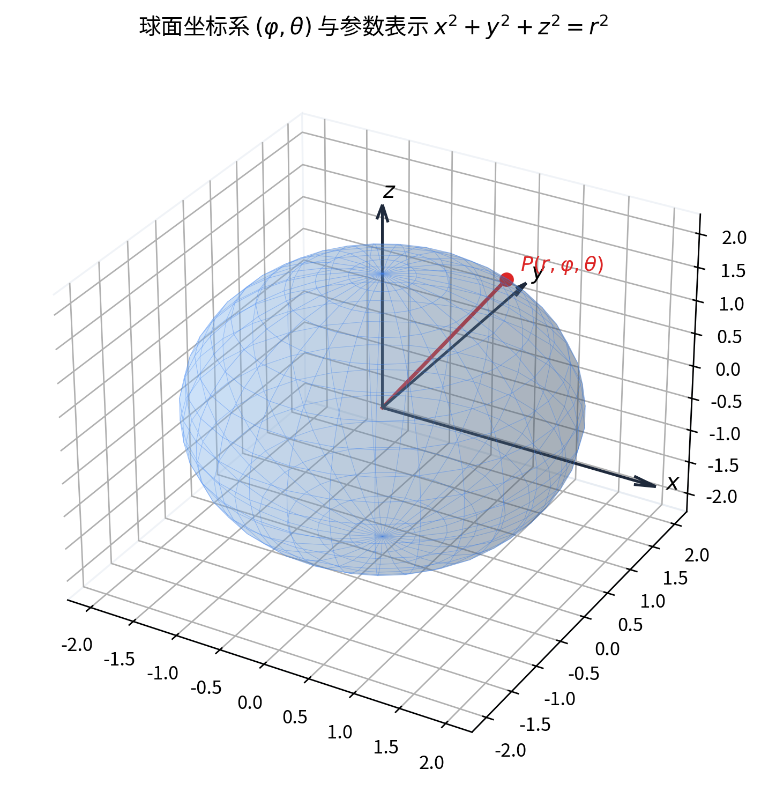
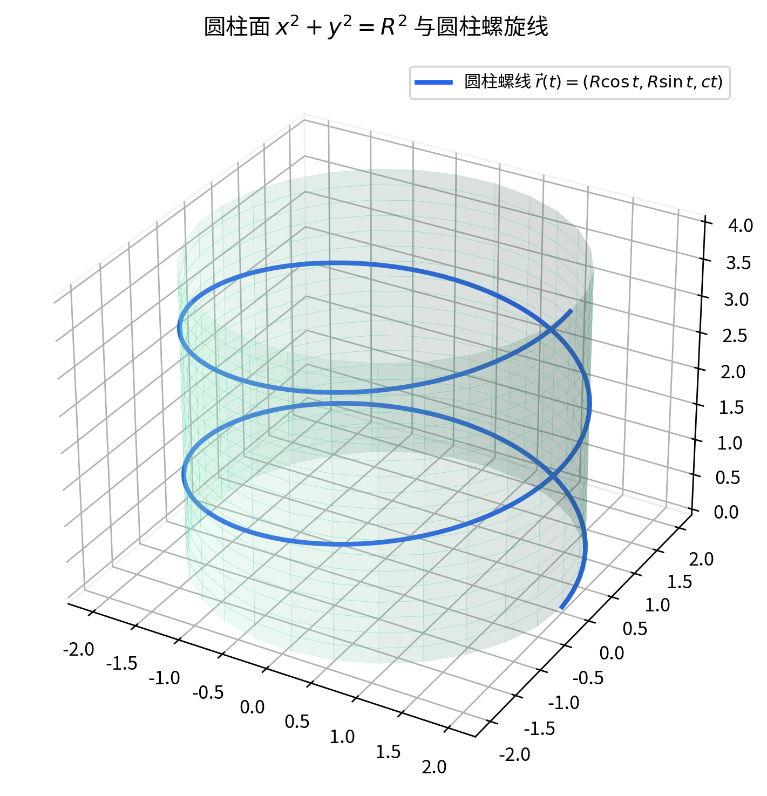

前面几次课（一共 5 次）把向量代数的内容介绍完了。向量代数里的加法和数乘，提供了一套工具，让我们能计算向量或线段的长度、夹角、面积等等。下面要介绍的是几何图形：几何图形怎样用代数来刻画。
一个几何图形并不是把点随随便便放在一起构成的集合。所谓图形，是空间中的点满足某一种特征（性质）而聚集成的形状；点和点放在一起时还需要某种联系，这种联系就是光滑性、连续性——并不是乱七八糟的点放在一起就构成一个几何图形。我们讲的几何图形，基本上就是连续的、或者是光滑的这样一种图形。
这种“特征”用什么表达？基本就是用方程，或者方程组。点和点之间满足某种特征，对应的就是某个方程或方程组。于是几何图形与方程之间建立起一种等价关系：图形上的点，和方程的解，彼此对应。
要讲清这种对应关系，首先要建坐标系。在坐标系下，空间中的点 P 与其坐标有序数组 (x,y,z) 之间建立了一一对应。设整个图形用 S 表示，方程用 F(x,y,z)=0 表达；点 P 以 (x,y,z) 为坐标落在图形 S 上，等价于它的坐标满足这个方程。这件事包含相互关联的两层含义，是数学上严格的双重验证要求：
换句话说：点在曲面上就满足这个方程；反过来，以这个方程的解为坐标的点就在曲面上。要确认一个方程是某个图形的方程，必须两方面都验证。
曲面方程的出发点，就是刚才建立的坐标系——也就是 Oxyz 坐标系，点和坐标有序数组之间的一一对应关系。在曲面 Σ 上的点 (x,y,z) ，满足某个方程；反过来，满足该方程的点都在曲面上。
一般式方程（普通方程、隐式方程）：形如 的方程，称为曲面的一般式方程，也叫做普通方程。
参数方程：与一般式相对应，还存在带两个参数 u,v （双参数）的表达形式。在坐标系下，曲面上的点可表示为 其中 (u,v) 落在某个区间（或区域）当中。这样的表达称为参数方程。
一般式与参数式之间可以互换。例如从 F(x,y,z)=0 中选合适的参数可反解出显式；反过来消掉参数就得到一般式。这一步要依靠隐函数定理（显隐函数）：在某一点的某个邻域内，函数满足一定的可微性条件，就总可以把 z 解成 z=f(x,y) 。最简单的情形如取 x=u,y=v ，再从 F(x,y,z)=0 中解出 z=f(x,y) ，就化为显式。所以实际上就是一个“隐—显互化”的过程。
向量式方程：前面讲的是用坐标来表达。若改用向量，点 P 对应位置向量（记作）；当点 P 变动时，随之变化，得到的关于的方程称为向量方程。
举例来说：到原点距离等于定长的点的全体，向量上就是 这个式子在平面上就是圆的方程，在空间里就是球面的方程。向量式也写成参数形式：。
到这里，我们介绍了方程的三类：一般式（普通方程）、参数方程、向量式（含向量参数方程）。
命题：求过点且平行于 xOy 平面的平面方程。
思路：平面与 xOy 平面平行，意味着其上所有点的 z 坐标都等于该平面所过的那个常数值。
推导：
结论：该平面的普通方程为；参数方程为。普通方程与参数方程可互相转换。
意义与易错点：普通方程直接给出“特征即 z 恒定”；参数方程里 u,v 取任意值，正说明该平面沿 x,y 方向无限延展。
命题：建立球心在原点、半径为 r 的球面的参数方程，并讨论参变量与坐标之间能否一一对应。
[按图还原] 已知：球心在原点、半径为 r 的球面；取球面坐标（纬度 φ 、经度 θ ）。纬度 φ 满足；经度 θ 取 0 到（即 [0,2π) ），为避免端点重复，常取 0≤θ<2π 。图上标出点 P 的 x,y,z 坐标分别落在相应线段上：位于纬度 φ 处的“纬度圆”半径为 rcosφ ，该圆在 xOy 平面上的投影构成直角三角形。
思路：先确定纬度圆半径为 rcosφ ；在此纬度圆上按经度 θ 取点，于是 x,y 都含因子 cosφ ，而 z=rsinφ 。
推导：
结论：球面参数方程为
意义与易错点：老师强调这是最重要的一例。它有一个关键特点——在北极、南极这两点（即），无论 θ 取何值，点都落在两极，所以参变量 (φ,θ) 与坐标 (x,y,z) 在两极处不是一一对应；除去两极外才是严格的一一对应。正因为如此，球面找不到一个让参变量与点处处一一对应的单一参数化，往往需要用多个表达式拼接——这也正是后续微分几何等课程里球面成为最重要模型的缘由。[补全] 标准的球面参数化即上式；两极处 (u,v)→(x,y,z) 不单射，此说明非当堂逐条推演，仅作自学参照。
命题：把一组参数方程化为一般方程，并识别它是什么曲面。
思路：参数方程里含两个参数，通过两式相加、相减解出参数，再代入第三式消去参数，得到只含 x,y,z 的一般式。
[按图还原] 推导（口述有漏字，按学科标准整理并标注）：老师给出的参数式可整理为 （也可能写作含常数 a,b 的等价形式 [?]）。
逐步推导：
结论：该曲面是双曲抛物面，也就是马鞍面（saddle）。老师指出，这种“参数 → 一般”的转化本质上就是消参过程，依靠隐函数、显函数的互化来完成。
意义与易错点：[补全] 标准马鞍面常写作；此处按课堂口述的参数式消参结果给出，非逐字板书，仅作自学参照。识别曲面类型时，要能从一个参数式快速看出它对应哪张熟悉的图形。
曲线方程有两种基本观点。
第一种观点：曲线是两张曲面的交线。 设曲面、，把这两个方程联立起来： 联立所得的就是曲线的方程，这称为曲线的一般式方程（由两张曲面的普通方程联立而成）。
第二种观点：曲线是动点的轨迹。 随时间 t 变化，点的位置 (x(t),y(t),z(t)) 随之变化，当 t 在区间 [a,b] 上变动时，就描出一条曲线。这样表达出来的就是曲线的参数方程。向量式参数方程写为 曲线的一般式与参数式之间同样可以互换（在满足可微性条件后，可消去或引入参数）。
命题：求平面 z=1 与球面（球心在原点、半径 2 ，方程）的交线。
思路：把两曲面方程联立，消去 z 即得交线在 z=1 平面上的形状。
推导：联立 代入得，即
结论：交线是平面 z=1 上、以原点为中心、半径为的一个圆。
意义与易错点：老师强调，同一条曲线可以是两张不同曲面的交线（比如换成别的曲面仍可能得到同一个圆）。因此描述一条曲线时必须写成两曲面联立的形式，不能简单地化简成单一方程就了事。
[按图还原] 已知：在 xOy 平面上以原点为圆心、半径为 R 的圆，方程；过该圆上每一点作平行于 z 轴的直线（母线），这些平行直线全体构成的图形就是圆柱面。母线平行于 z 轴。
命题：求该圆柱面的方程，并用双重验证证明之。
证明（两个方面）：
结论：圆柱面的方程为 其中 z 不受限制（任意）。
意义与易错点：不能只写 z=0 ，那只表示底面那个圆周；母线沿 z 轴方向无限延伸，所以方程中 z 任意。老师每次推导这类方程，第一句话都是“在曲面 Σ 上任取一点 P(x,y,z) ”，正是为了把完备性与纯粹性这两个方面都讲清楚。
[按图还原] 已知：在平行于 xOy 的平面 z=h 上取一个圆（准线），其圆心在 z 轴上；所有过原点 O 与该圆上点的直线（母线）全体构成圆锥面； O 称为顶点，这些过 O 且与准线相交的直线称为母线。该图形可沿 z 轴上下无限延长。
命题：求该圆锥面的方程。
推导（按标准方法整理，因口述有漏字，关键处标 [补全]，非当堂逐字板书，仅作自学参照）：
结论：顶点在原点、轴为 z 轴的圆锥面方程为。
意义与易错点：[补全] 老师口述中取相似比 t=z/h ，并给出等价参数式——用准线圆参数化 x=ρcosφ,y=ρsinφ,z=h ，再整体按 z 比例缩放得到锥面参数方程；标准推导如上，仅作自学参照。圆锥面与圆柱面一样，方程中 z 不单独受限；顶点 O 处需单独留意。
[按图还原] 已知：圆柱面；点 P 在该圆柱面上，且它在 xOy 平面上的投影以匀角速度 ω 绕原点作圆周运动，同时沿 z 轴方向以匀速 v 作直线运动。这是两种运动的合成。
命题：求圆柱螺线的参数方程。
推导：
于是得到参数方程 参数 t∈R （上下无限延伸）。
结论：用参数方程表示圆柱螺线特别简单；它是圆柱面上的一条空间曲线（如华表上盘绕的龙即是这类图形）。
意义与易错点：老师借此小结已介绍的特殊图形——球面、平行于坐标平面的平面、圆柱面、圆锥面、圆柱螺线——它们的方程都应能直接写出来。
概念[按图还原]：给定一条空间曲线，沿平行于某坐标轴（如 z 轴）的方向把它投影到某个坐标平面（如 xOy ）上；过投影所得平面曲线上每一点、作平行于该轴的直线（母线），这些平行直线全体构成的柱面，称为该曲线在这个坐标平面上的投影柱面。
一般求法（定理）：设曲线由两张曲面联立 求其向 xOy 平面的投影柱面：只需消去参数 z ，得到只含 x,y 的方程 H(x,y)=0 ，即为投影柱面方程。推导如下：取投影柱面上一点 P(x,y,z) ，其母线与曲线交于，则，且满足 F=0,G=0 ；从这两个方程消去 z ，便得只含 x,y 的关系 H(x,y)=0 。这条定理告诉我们：只要把联立的两方程消掉第三个坐标，剩下的方程就是所求投影柱面。
命题：求曲面（旋转抛物面）与平面 z=x+2 的交线在 xOy 平面上的投影柱面方程。
思路：将交线的两方程联立，消去 z 。
推导：联立 代入消去 z 得 配方：
结论：投影柱面为 这是一个圆柱面（母线平行于 z 轴，圆心 (1/2,0) 、半径 3/2 ）。
追问与易错点：若改问在 xOz 平面上的投影（即消去 y ），则“消不掉”——因为上面这个投影柱面方程本身不含 y ，它平行于 y 轴，所以曲线在 xOz 平面上没有（单一的）投影柱面，投影退化。这正是“消参消不掉”的原因：该柱面平行于 y 轴，只在 xOy 平面上有正常投影。
老师进一步提醒：消参时务必根据图形的几何性质确定变量的取值范围，确保得到的方程呈现的是图形的全貌而不是其中一部分；极端情形下，平面本身也可以看作一种投影柱面——具体问题要具体分析。
（本课内容到此；按课堂安排，后续内容在 10 月 10 日（周三）的课继续。）
